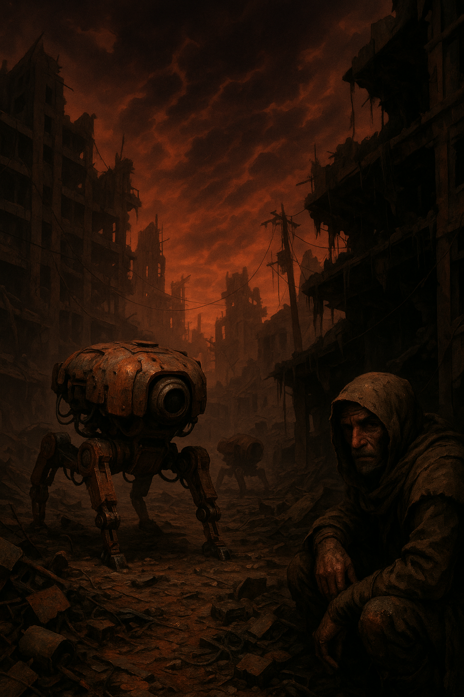

☢️
Post-Apocalyptic & Surreal Hell
The world is gone. But memory lingers.
Ash-covered ruins, broken cities, empty malls.
The real enemy may be despair. Ideal for psychological themes, solitude, or haunted relics of the old world.
🌆 What Defines This World Type?
- Ruins of civilization—highways, schools, malls now deserted.
- Scavenging, survival, and solitude as daily life.
- Radiation zones, mutated fauna, and psychic decay.
- Nightmares, hallucinations, or shifting realities.
💀 Worldbuilding Tips
- Design a lost world with fragments of the old—bent stop signs, empty playgrounds, preserved letters.
- Use lighting and sound to evoke unease—silence is often scarier than monsters.
- Think about what ended the world—and how that shaped the survivors.
- Reality doesn’t have to be stable—use dream logic, glitches, or surreal events.
🧠 Narrative Hooks
- A journal keeps writing entries after its owner has died.
- Each survivor remembers the past differently—who is right?
- A haunting melody follows the player, heard only at night.
- You wake to find the world changed, but no one else remembers.
🎮 Game Design Ideas
- Exploration based on emotional cues rather than maps.
- Limited resources and heavy choices—what will you carry?
- Memories as collectible lore or gameplay modifiers.
- Optional companions that may or may not be real.